| |
|
MENFEZLER
|
Genel Bilgiler
YAPI Sütunu
Menfez düzenleyicisi ve gelişmiş tanımİSİM Sütunu GİRİŞ AĞZI(MEMBA) / ÇIKIŞ AĞZI(MANSAP) Sütunu EĞİM / UZUNLUK Sütunu VEREV AÇILARI Sütunu Diğer Kontroller Genel Bilgiler Enine drenaj menfezleri ve projeyle ilişkili diğer boru hatları, bu iletişim kutusundaki araçlarla tanımlanabilir ve gösterilebilir: 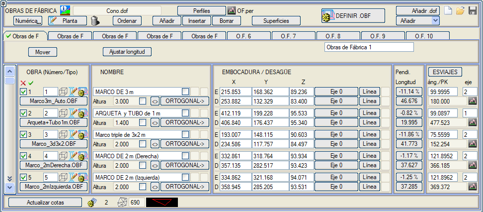
Burada, tüm menfezleri tek bir .dof uzantılı dosyada yükleyebilir  ve kaydedebilirsiniz ve kaydedebilirsiniz  . Bu dosyanın adı projenin .pol dosyasına da eklenir (menfezler birden fazla ekseni etkileyebilir ve hiçbirinin .vol dosyasında arşivlenmez). Eğer mevcut projenin tanım .pol dosyasında bir .dof dosyasının adı zaten belirtilmişse, menüye girildiğinde bu dosya otomatik olarak yüklenir. . Bu dosyanın adı projenin .pol dosyasına da eklenir (menfezler birden fazla ekseni etkileyebilir ve hiçbirinin .vol dosyasında arşivlenmez). Eğer mevcut projenin tanım .pol dosyasında bir .dof dosyasının adı zaten belirtilmişse, menüye girildiğinde bu dosya otomatik olarak yüklenir.Menfezler beş farklı sekmede sınıflandırılabilir. [.dof Ekle]: Bir Menfez dosyası ekler ve herhangi birinin koordinatlarının tekrar edip etmediğini kontrol eder; eğer tekrar ediyorsa, devre dışı olarak yükler. [Sıfırla]  simgesi, iletişim kutusundaki verileri siler ve .dof dosyasını proje tablosundan kaldırır. simgesi, iletişim kutusundaki verileri siler ve .dof dosyasını proje tablosundan kaldırır. Öte yandan, disket simgesine tıklandığında ve tanımlanmış menfezler varsa, aşağıdaki adla bir dosya kaydedilir: Öte yandan, disket simgesine tıklandığında ve tanımlanmış menfezler varsa, aşağıdaki adla bir dosya kaydedilir:
[Uzunluğu Ayarla] aracı, bulunduğumuz sekmedeki tüm menfezlerin uzunluğunu aynı anda otomatik olarak ayarlamayı sağlar. YAPI Sütunu YAPI sütununda, projeye eklediğimiz her bir menfez hakkında bazı genel verileri tanımlayabiliriz. Bu sütunun kutucuğuna yazdığımız numara, menfezin kimlik numarasıdır. Eğer art arda iki bölüm aynı numarayı taşıyorsa, bunların aynı menfezin birbirini takip eden iki bölümü olduğu anlaşılır: birincinin çıkış ağzı ikincinin giriş ağzına bağlanır. i numaralı bölüm tanımlandıktan sonra bir sonrakinin tanımına aynı numara ile başlanırsa, önceki bölümün çıkış ağzı koordinatları bu bölüme giriş ağzı olarak kopyalanır. Aynı satırda üç simge bulunur, bunlarla şunları yapabiliriz:
Simgelere tıklayarak tüm Menfezleri devre dışı bırakabilir ve etkinleştirebilirsiniz:  İSİM Sütunu Bu sütunda ismi ve diğer bazı seçenekleri tanımlayacağız. Her .obf dosyası, bu menfez türüyle ilişkili bir isim taşır ve bu isim varsayılan olarak kullanılır, ancak kullanıcı daha sonra bunu bireysel olarak değiştirebilir. Bu isim, hem planda çizimde hem de boykesitte gösterim için kullanılacaktır. Bu kutucuğun içindeki onay kutusunu etkinleştirmek, .obf dosyası değiştirilse bile ismin korunmasını sağlar. Yükseklik kutucuğu, her menfez için bir yükseklik değeri tanımlamayı sağlar. Yanındaki kutucuk etkinleştirilirse, bu yükseklik menfez ekseninin boyuna eğimine dik olacaktır. [<>] düğmesi, yanındaki sütunda giriş ağzı ve çıkış ağzı koordinatlarını değiştirir. [DİK KES->] seçeneği, menfez ekseninin güzergah eksenine dik olacak şekilde çıkış ağzını tanımlamayı sağlar. Tıklandığında, program dik olarak kesmesi gereken güzergah eksenini seçmenizi ister (sayısal olarak verilebilir veya o eksenin plan çizimindeki herhangi bir çizgi seçilebilir) ve çıkış ağzının hesaplanacağı bir çizgi (örneğin, dolgu şev eteği çizgisi) seçmenizi ister. GİRİŞ AĞZI(MEMBA) / ÇIKIŞ AĞZI(MANSAP) Sütunu Her yapı, her biri uç noktalarının 3 koordinatı ile verilen bir veya daha fazla düz bölümle tanımlanır: giriş ağzı(memba) ve çıkış ağzı(mansap). Koordinatlar, ekranın üst kısmındaki [Tıkla / Sayısal] anahtarının durumuna bağlı olarak fare ile grafiksel olarak veya sayısal olarak verilebilir. Eksenlerin plan gösteriminde, grafik ekranda, her menfez için üç anahtar nokta (giriş ağzı, çıkış ağzı ve orta nokta) görülebilir. Bu noktalar seçilip sürüklenerek konumları grafiksel olarak değiştirilebilir. Hem giriş ağzı hem de çıkış ağzı için, alın duvarının (veya bacanın) paralel olacağı bir [eksen] ve menfez tanımında otomatik uzatma kullanımı belirtilmişse kanat duvarlarının sonunun nerede kalacağını işaretlemek için bir [Çizgi] seçilebilir. Eğer öyleyse, program geçerli bir kesişim olmaması veya sonuçta ortaya çıkan kanat duvarı uzunluğunun menfezde tanımlanan minimumdan daha az olması durumu hariç, kanat duvarlarını belirtilen çizgiyle kesişene kadar götürür. Bu durumda, program dolgu şev eteği ile kesişimi arar. EĞİM / UZUNLUK Sütunu Bu sütunda her menfez için iki düğme bulunur:
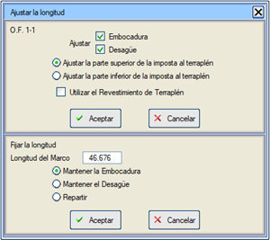
VEREV AÇILARI Sütunu [VEREV AÇILARI] düğmesine tıklandığında, çeşitli menfez bölümlerinin kestiği eksenler, bunlara göre verev açıları ve kesişim noktasının KM'si hesaplanır. Kullanıcı eksen numarasını manuel olarak belirtirse, yapı onu kesmese bile verev açısı ve KM bu eksene göre hesaplanır. İlişkili bir ana ekseni olmayan menfezler için, verev açısı hesaplanırken, devre dışı bırakılmış veya devre dışı bırakılmış gruplara ait eksenlerle ilişkilendirilmezler. Verev açısının sayısal değerini değiştirirsek, program tüm menfezi, verev açısının ölçüldüğü ana ekseni kestiği nokta etrafında döndürerek giriş ağzı ve çıkış ağzının yeni konumunu hesaplar. Kırmızı Kot menüsünde sadece mevcut ekseni kesen menfezler gösterilecektir. Verev açısı hesaplaması için burada belirtilmiş olsalar bile, ekseni kesmeyenler gösterilmez. Buna karşılık, belirttikleri ekseni kesmeseler bile, bu eksenin azimutu, bu şekilde tanımlanmış elemanlar (menfez gövdesi, kanat duvarları...) için açıların başlangıcı olarak kullanılacaktır. Eğer menfezin verev açıları için bir ekseni tanımlanmışsa, enkesitleri oluşturulurken, yapıyı tanımlayan çizgi ile platform (yüzey 67) arasındaki başlangıca olan mesafe ve kot farkı aşağıdaki üç noktada hesaplanır:
Verev Açısı Etiketlemesi Bazı ülkelerde kullanılan açı kriterine uymak için verev açısını etiketlerken aşağıdaki seçenekler eklenmiştir:
Diğer Kontroller [Ekle], [Araya Ekle] ve [Sil] düğmeleri, menfez bölümlerini tanımlayan komut satırları üzerinde işlem yapar; sona bir tane ekler, mevcut olanın (tablonun ilk satırında gösterilen) önüne bir tane ekler veya mevcut bölümü siler. Ekle açılır menüsünden şunları seçebiliriz:
Giriş ağzı ve çıkış ağzı koordinatları verildikçe, program girilen bölümün eğimini ve 3D uzunluğunu hesaplar ve gösterir.
.per dosyasından menfezler eklenirken, eğer kesit tanımlıysa giriş ağzı ve çıkış ağzı dolgu şev etekleriyle sınırlanır. Ayrıca .per dosyasının ilk yüzeyi, her menfeze arazi profili olarak atanır, böylece menfezler için enkesitler çıkarılırken bu profil kullanılır ve arazi yüzeyinden kesilmez.
İletişim kutusunda, bir menfezin ilişkili bir arazi profili olup olmadığını bir bakışta anlamak için menfez adının yanında bir simge belirir. Bu simgenin yanında, bu ilişkili profili silme imkanı eklenir. 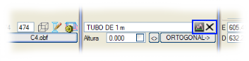 [Plan] düğmesine tıklandığında, tüm menfezler her .obf dosyasının sakladığı talimatlara göre EDM üzerine çizilir.  ile, kullanıcı yeniden çizmeden önce tanımlardan herhangi birini değiştirebilsin diye yapılmış olan çizim silinir. ile, kullanıcı yeniden çizmeden önce tanımlardan herhangi birini değiştirebilsin diye yapılmış olan çizim silinir.Kotları güncelle kutucuğu ile, tüm menfezlerin giriş ağzı ve çıkış ağzı koordinatlarının kotları, mevcut SAM yüzeyi referans alınarak değiştirilir. SAM yüzeyleri kontrolü menüsüne doğrudan yanındaki  simgesinden erişilebilir. simgesinden erişilebilir.[Plan] düğmesine basarak menfezler çizildiğinde, her biri için L386 çizgi tipinde küçük bir alan oluşturulur. Bu alan, ana eksenin dolgusunun menfez gövdesinin üzerine oturabileceği bir yüzeyi tanımlar. Bir eksen boykesitte hesaplandığında, menfezlerin planı çizildikten sonra veya proje Menfezleri Çiz seçeneği etkinken hesaplandığında, ISPOLn.per enkesitlerine bu yüzeylerle olan kesişimler eklenir. Kütüphaneye, menfezin kapladığı alanı dolgu metrajından düşen, değiştirilmiş bir ISPOL4.dar eklenir.  Enkesitler oluşturulurken, sıfırdan farklı bir yükseklik tanımlanmışsa, menfez eksenine paralel bir çizgi oluşturulur. Enkesitler oluşturulurken, sıfırdan farklı bir yükseklik tanımlanmışsa, menfez eksenine paralel bir çizgi oluşturulur.Ayrıca, çizimde tanımlanan çizgiler menfez yüksekliği ile kopyalanır ve uçlarda kapatılır, böylece 3D bir görünümde dikdörtgen kesitli borunun geometrisi görülebilir. [Sırala] düğmesi ile iki kriter ayırt edilir:
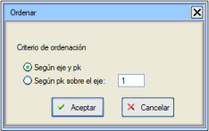
[Enkesitler] düğmesi, her menfezin açılım profilini içeren OF.per adında bir .per formatında dosya oluşturur (pafta çıkarmak için Boykesit -> ENKESİT PAFTALARI'ndan yapılır). Enkesitleri doğru bir şekilde elde etmek için, bu komutu çalıştırmadan önce:
İki pay değeri girilmelidir: arama payı ve kırpma payı. Bu, menfezin başına ve sonuna eklenen arazi uzunluğunun tam bir değere sahip olmasını sağlar. Bu enkesitlerdeki eksen mesafe başlangıcının, ana eksenle (üzerinde verev açısı hesaplanan) çakışması sağlanabilir. Enkesitlerdeki mesafe başlangıcı olarak Plandaki veya Kesitteki ana eksen seçilebilir (eksen dışmerkezliği olan eksenler için farklıdır). Çizgi ekle: Bu seçenek, menfezlerin enkesitlerine o çizgilerle olan kesişimleri eklemek için [Enkesitlere çizgi ekle] iletişim kutusunun tanımını kullanır. Menfezi çiz: Bu seçenek etkinleştirildiğinde, enkesitte menfez gövdesi (kalınlığıyla), parapet (kalınlığıyla), alın duvarı, giriş ağzındaki bacalar, radye ve kanat duvarları gösterilir. Araziyi ...'da Kes: Bu seçenek etkinleştirildiğinde, Menfez ekseninin her iki tarafında sabit bir mesafede arazi yüzeyi ile olan kesişim eklenir. Kullanıcı KM: Bu seçenek etkinleştirildiğinde, enkesitlerde saklanan Menfezin eksenlerle kesişim KM'si, KM Eşitliklerinden elde edilen KM'dir. Enkesitler çizilirken etiketlenen KM'ler bu kullanıcı KM'leridir. 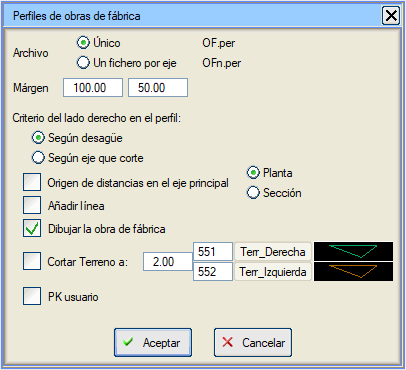
Menfezlerin enkesitleri kesilirken, arazi yüzeyi profili haritadan çıkarılır ve bitkisel toprak tipi (L104) atanır. Sağlam zemin (L66) de haritadan çıkarılır ve özellikle arazi ile kesişime paralel ve ISPOL#.per dosyasından okunan derinlikte bir çizgi ile elde edilir (# eksen numarasıdır). 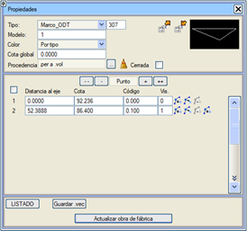[OF.per Düzenle] seçeneği ile doğrudan enkesit düzenleyiciye erişilebilir ve OF.per dosyası düzenlenebilir. Enkesit düzenleyicide, uygulama bir menfez verilerini içeren bir dosyayı düzenlediğini algılar, böylece onu temsil eden poligon hattının bir değişikliği (üzerine çift tıklandığında görünen özellikler kutusu) ve ardından [Menfezi güncelle] tuşuna basılması, kullanıcının tasarım değişikliklerini basit ve hızlı bir şekilde yapmasını sağlar. Birbirine bağlı iki bölüm olduğunda bu seçenek çalışmaz, bu nedenle bunları önceden bağımsız bölümler olarak ele almak, düzenledikten sonra yeniden numaralandırmak ve son olarak enkesitleri yeniden oluşturmak önerilir. Her enkesitte birkaç çizgi veya yüzey gösterilir:
Boykesit paftaları çizdirilirken, kullanılan boykesit şablonu dosyası (.gui) buna uygunsa, menfezlerin eksenle kesişimi aranır ve bunlar boykesitte gösterilir. isp18.gui, isof1.gui ve isof2.gui şablonları, menfezlerin gösterimini içeren şablon örnekleridir. Tüm gösterim, menfez türünün .obf dosyasında tanımlananlara bağlıdır. Bu dosyalar, Boykesit'in yan menüsündeki [TABLOLARI DÜZENLE] → .obf seçeneği ile doğrudan düzenlenebilir ve bunlarda kullanılacak çizgi tipleri ve semboller açıklanır, ancak [.OBF TANIMLA] düğmesine tıklandığında açılan iletişim kutusu aracılığıyla değiştirilmesi daha kolaydır. C4.obf dosyası örneği: # DENEME MENFEZİ C4.obf
#-------------------------- # isim #-------------------------- N 1 m BORU #-------------------------- # planda çizim için #-------------------------- # PL 64 .5 menfez eksenine paralel çizgi # PL 64 -.5 menfez eksenine paralel çizgi PSE 90 2. 1 giriş ağzında sembol Boyut 2 kesişimde ana eksen açısı PSD 91 2. 1 çıkış ağzında sembol Boyut 2 kesişimde ana eksen açısı # Paralel Çizgi Gir.Ağzı.Mes. Çık.Ağzı.Mes. Gir.Yön Çık.Yön #----------------- ---------- -------- -------- ------- PL2 0 .5 1.5 2. 1 1 PL2 0 -.5 1.5 2. 1 1 # İsmi planda etiketle # Stil Boyut YB DB Çık.Ağzı.Mes. Göreceli_Açı # ------- ------ --- ---- ---- ------------- --------------- PN 24 2. 0 2 5. 0. #-------------------------- # eksenlerin boykesitinde çizim için #-------------------------- LSC 309 1. 0 Eksenle kesişimde sembol,boyut,... #-------------------------- SON Örneğin, C7.obf dosyası, boykesitte gösterilen (ölçeklenebilir) sembolü tanımlayan komutlar içerir, ancak aşağıdaki unsurların neden olduğu deformasyonu dikkate alır:
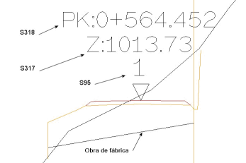Ayrıca, enkesit çizim menüsünde, otomatik olarak OF.per dosyasını seçen [Menfezler] seçeneği belirir. Kullanıcı, bu enkesitleri göstermek için, menfezlerin parametrelerini etiketlemeye olanak tanıyan bir dizi komut içeren OBFA1.gut enkesit şablonunu da kütüphanede bulabilir. Yüzeyler Yüzeyler düğmesine tıklandığında aşağıdaki menü belirir: 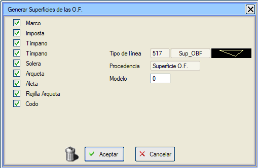
Bu seçenek, menfezleri oluşturan yüzeyleri, belirli bir çizgi tipine (varsayılan 517) sahip yeni bir harita yüzeyi olarak oluşturmayı sağlar. Ayrıca, [Konsollar] seçeneğiyle harita yüzeyi ve SAM yüzeyi oluşturulur. Bu, Menfezin tüm elemanlarının kesitleriyle enkesitler oluşturmayı mümkün kılar: Menfez Gövdesi, Parapet, Kanat Duvarları, Radye, Bacalar ve dirsekler. Böylece, bir eksen veya proje hesaplandığında, ISPOLn.per dosyalarına bu 517 yüzeyiyle (menfez gövdesi, parapet, radye, kanat duvarları, bacalar ve dirsekler yüzeyleri) olan kesişimler dahil edilir. Menfez düzenleyicisi ve gelişmiş tanım ISTRAM®/ISPOL®, enine drenaj menfezlerinin daha gelişmiş geometrik tanımlarını destekler. Bunun için, şimdiye kadar açıklanan özelliklere ek olarak kanat duvarları, parapet vb. ile ilgili bazı diğer özellikleri de içeren .obf dosyalarını düzenlemeye olanak tanıyan küçük bir araç sunar. Ayrıca, menfez geometrisinin küçük bir önizlemesini sunan bir 3D görüntüleyici de bulunur. Bu araca [.OBF TANIMLA] düğmesi ile erişebiliriz. O zaman aşağıdaki iletişim kutusu açılır: 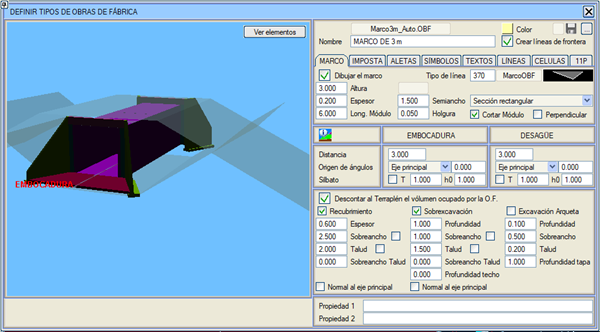
Dosya bölümünde, kütüphaneye kaydedilecek .obf dosyasının adı belirtilmelidir, ancak mevcut bir dosyayı yüklemek de mümkündür. Menfezin ilişkili bir adı olacaktır. [...] düğmesi ile farklı kütüphanelere kaydetmeye izin verilir. Eğer Sınır çizgileri oluştur kutucuğu etkin bırakılırsa, proje hesaplamasında dolguları menfezlerin kanat duvarlarına göre kırpmak için işlenen bir obf.lfr sınır çizgileri dosyası oluşturulur. Kullanımı hesaplama sırasında otomatik olduğu için yüklenmesi gerekmez. Sınır çizgilerine, dağlık arazilerdeki virajlı eksenlerin diğer bölgelerini etkilemesini önlemek için uygulama aralığı eklenir. Ancak tavsiye edilenler şunlardır:
Menfez Gövdesi Her menfez gövdesi için iki özellik tanımlanabilir: Özellik 1 ve Özellik 2. Bu özellikleri menfez .obf dosyasını yüklediğinde miras alır, ancak bu özel menfez için değiştirilebilir. Menfez gövdesinde, başlangıç olarak, çizileceği çizgi tipi seçilebilir. Sonra tanım yöntemini seçmeliyiz:
Sonunda, tüm dış alanları çevreleyen ancak sadece giriş ağzı ve çıkış ağzında (Alın Duvarı) inşa edilen bir dikdörtgen tanımlanır. Grafik düzenleyicide alanlar oluşturulursa, sıra önemli değildir, çünkü vektör tanım iletişim kutusuna geri dönüldüğünde otomatik olarak yeniden sıralanırlar. 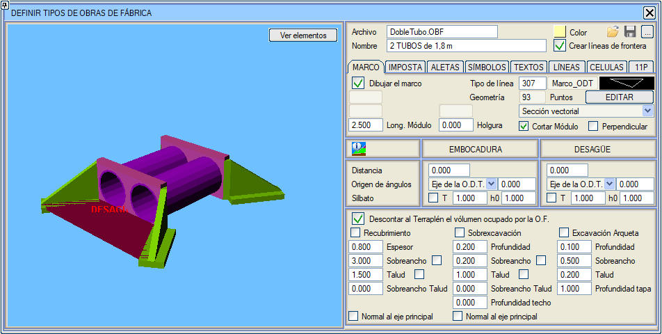
Ayrıca, menfezi oluşturacak prekast modüllerin uzunluğunu ve aralarındaki derz boşluğunu da tanımlamalıyız. Program, menfezi otomatik olarak gereken sayıda modüle bölecektir. Eğer Modülü kes seçeneği devre dışı bırakılırsa, belirlenen modül uzunluğuna uymak için çıkış ağzının konumu otomatik olarak ayarlanır. Eğer Dik seçeneği etkinleştirilirse, her modülün uçları menfezin tabanına dik olacaktır. 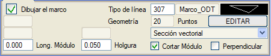
Ayrıca, menfez gövdesinin başlangıcı ve sonunun giriş ağzı ve çıkış ağzı noktalarına olan mesafesini tanımlamalıyız. Bu mesafeler, menfezler iletişim kutusunda, listede ve boykesitte menfez gövdesinin gerçek uzunluğunu vermek için düşülür. Menünün aynı bölümünde, açı başlangıcımızın ana eksen mi yoksa menfez ekseni mi olacağını ve menfez gövdesinin bu açı başlangıcına göre göreceli dönüş açısını seçeceğiz. Ayrıca, Kaplama, Fazla Kazı ve Baca Kazısı yüzeylerinin oluşturulması için kutucukları işaretleyebiliriz (bir örnek Demo\Estructuras\Estructura_Doble.isa örneğindeki 10 numaralı Menfezde görülebilir). Kaplama yüzeyi kalınlık, pay, şev ve şev payı parametrelerini kullanır. Fazla Kazı yüzeyi derinlik, pay, şev, şev payı ve tavan derinliği parametrelerini kullanır. Baca Kazısı yüzeyi derinlik, pay, şev ve kapak derinliği parametrelerini kullanır. Kaplama ve Fazla Kazı için, yapı verev olsa ve parapetler ana eksen yönünde yerleştirilse bile, ana eksene dik olmaları için Ana eksene dik kutucukları işaretlenebilir. Bunlar içinde Pay ve şev, Menfez eksenine dik olacak şekilde özelleştirilebilir. Kaplanan hacmi dolgudan düş seçeneği, metrajda menfezin kapladığı hacmi dolgudan düşer. Son olarak, menfez gövdesinin 3D gösterimi istenmiyorsa, Menfez gövdesini çiz kutucuğu devre dışı bırakılmalıdır. Eğer etkin değilse, 3D gösterim yerine boykesit için tanımlanan sembol kullanılır. Kurulumun Demo\Estructuras klasöründe yer alan Estructura_Doble.isa örneğinde, eksen 2'de, km 126 üzerine 7 numaralı bir Menfez eklenmiştir. Giriş ağzı orta refüj altındaki bir bacadadır ve çıkış ağzı dolgu şevinde, dolgu eteğinden belirli bir yükseklikte çıkar. Bu menfezde, şev payı parametresi kullanılarak dolgu eteğine doğru yüzeyleri uzatan kazı ve dolgu yüzeyleri tanımlanmıştır. BIM modelinde aşağıdaki gövdeler gözlemlenebilir:
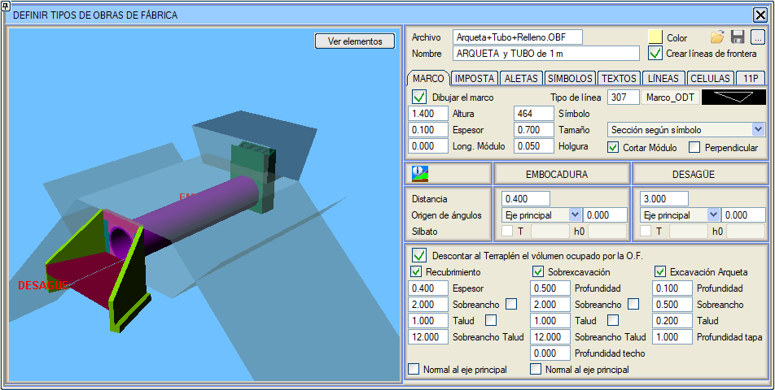
Menfez Geçiş Malzemesinin tabanı (Kapak yüzeyi), menfez gövdesinin üst kısmına oturur ve verev kesim uçlu gövdelerde olduğu gibi geometrisine uyum sağlar. Estructura_Doble.isa örneğinde, hesaplandığında, örneğin eksen 2'nin 560. enkesitinde, içinden bir boru gövdeli Menfez geçen bir kesitte gözlemlenebilir. Menfez gövdesinin alt kısmının oturduğu taban, verev kesim uçlu gövdelerde olduğu gibi (ve kapak yüzeyi gibi) menfez gövdesinin geometrisine uyum sağlar. Estructura_Doble.isa örneğinde, hesaplandığında, örneğin eksen 2'nin 560. enkesitinde, içinden bir boru gövdeli Menfez geçen bir kesitte gözlemlenebilir. Aynı anda dolgu iyileştirmesi ve menfez kazı ve dolgusu olduğunda, kazı, Menfez geçiş malzemesi ve iyileştirme kazı ve dolgusu malzemelerinin yayılımı, şu iki nokta arasında en uzakta olanla sınırlanır: Menfez kaplama şevinin sağlam zeminle kesişimi veya Menfez kazı şevinin iyileştirme kazı yüzeyi ile kesişimi: 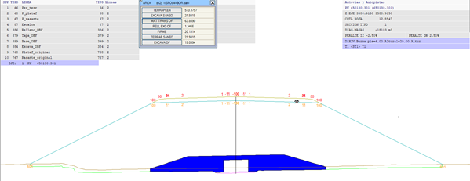 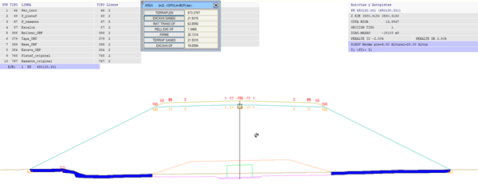 Liste (matobras.res): Proje hesaplandığında, yeniden metrajlandırılan eksenler Menfezlerin kazı ve dolgu malzemelerinin bilgilerini saklar ve sonunda bu bilgilerle her Menfez için ayrı bir matobras.res listesi oluşturulur. Bu dosya sonuçlar klasöründe (proje klasörümüzün içindeki "res" adlı klasör) bulunur. Aşağıdaki resimde bu matobras.res listesinden bir örnek gösterilmektedir. 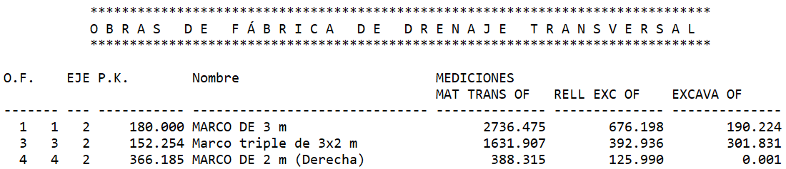
BIM oluşturmada: 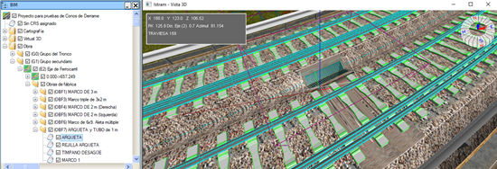
Kazı ve Kaplama: Ana eksenlerin ISPOLn.per enkesitlerinde, menfezlerin geçtiği yerlerde dört yüzey oluşturulur:
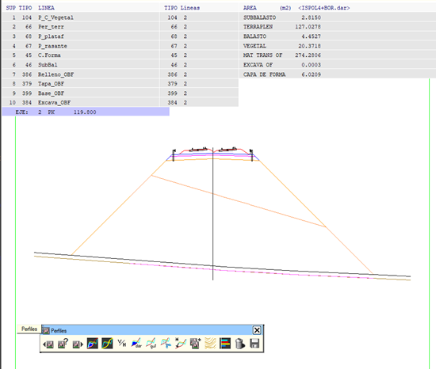
Vektörel olarak tanımlanmış menfez gövdeleri için, kanat duvarları ve parapet, giriş ağzı ve çıkış ağzında bir başlangıç yüksekliği ve bu yükseklikten itibaren bir şev ile tanımlanan verev kesim uçlu bir bitiş ile değiştirilebilir. Örnek olarak: Kurulumun Demo\Estructuras klasöründe yer alan Estructura_Doble.isa örneğinde bu tipolojiye sahip 8 numaralı bir Menfez eklenmiştir. 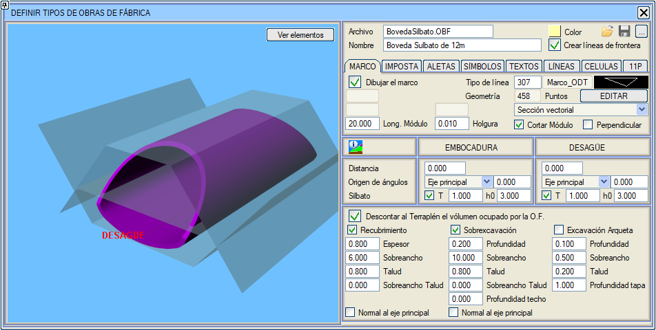
Açık bir menfez gövdesi tanımlamak için, kütüphaneye örnek olarak altı açık olan Marco_Abierto.OBF dosyası eklenmiştir. Bu bir vektörel gövdedir ve iki çizgi ile tanımlanır: Birincisi dış kontur, ikincisi iç konturdur. İki çizgi ilk ve son noktada çakışmalıdır. İlk ve son nokta, Menfezin giriş ve çıkış ağzı kotuna sahip olması için sıfır kotunda olmalıdır. Dış kontur, bu kotun altında bir pabuç konturu çizerek başlayabilir ve bitebilir. 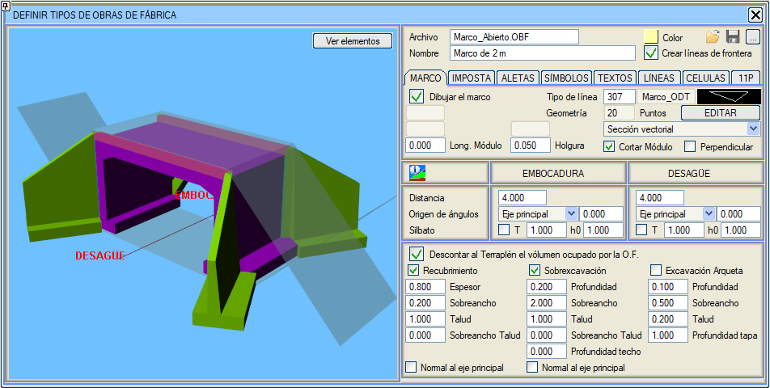
Parapet 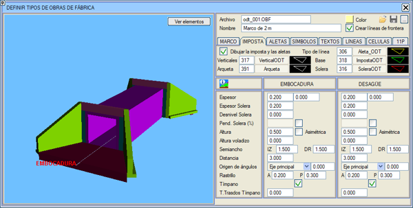
Bu sekmede önce parapet ve kanat duvarlarının kretinin, parapet tabanının, radyenin ve düşey çizgilerin çizgi tipini tanımlayacağız. Sonra giriş ve çıkış ağzındaki parapetlerin parametrelerini tanımlayacağız: kalınlık, radye kalınlığı, radye kot farkı, yükseklik, yarı genişlik ve giriş ve çıkış ağzı noktalarına mesafe, ayrıca tercih ettiğimiz açı başlangıcı ve buna göre göreceli dönüş açısı. Parapet yüksekliği simetrik olmak zorunda değildir: eğer parapet eksene paralel değilse ve Asimetrik kutucuğunu işaretlersek, dolgunun daha yüksek bölgesinde olan tarafın yüksekliği artırılacaktır. Radye kot farkı: kanat duvarı başlangıcındaki kot farkını parapet tavanına göre tanımlar. Bu değerin kullanımı, Demo\Estructuras klasöründe kurulan Estructura_Doble.isa örneğinin ikinci Menfezinde gösterilmektedir. Radye eğimi, hem giriş ağzında hem de çıkış ağzında. Bunun için menfez düzenleyicisinde bir bayrak etkinleştirilir, bu da istenen değeri yüzde olarak girmek için bir kutucuğu aktif hale getirir. Diş: giriş ve çıkış ağzı radyelerine, radye altındaki derinlik ve genişlikle tanımlanan bir diş ekleme imkanı. Alın Duvarı Sırt Şevi: Alın duvarlarının sırtı için bir şev tanımlanabilir. Kurulumla birlikte gelen kütüphaneye, bazı ülkelerde çok yaygın olan ve bu özelliği kullanan, giriş ve çıkış ağzında bir duvardan geçen bir boruyu simüle eden Tubo+Muro.OBF dosyası eklenmiştir. 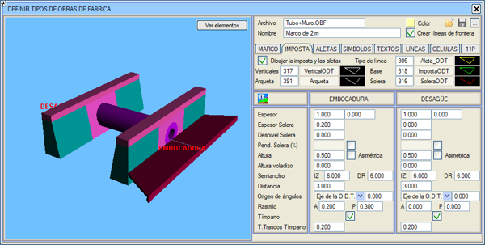
Konsol Yüksekliği: Parapetin bir kısmını, genişlik ve konsol yüksekliği ile verilen konsol olarak tanımlamak mümkündür. Kütüphaneye bu seçeneği kullanan Marco_abierto3.OBF dosyası eklenmiştir. (Parapet, menfez gövdesinden daha uzundur çünkü bu Menfez, belirli bir verev açısıyla yerleştirilmesi öngörülmüştür, bu da bu uzunluğun eksene paralel bir düzlemle kesildiğinde menfez gövdesinin görünür genişliğiyle çakışmasını sağlar). Kanat Duvarları 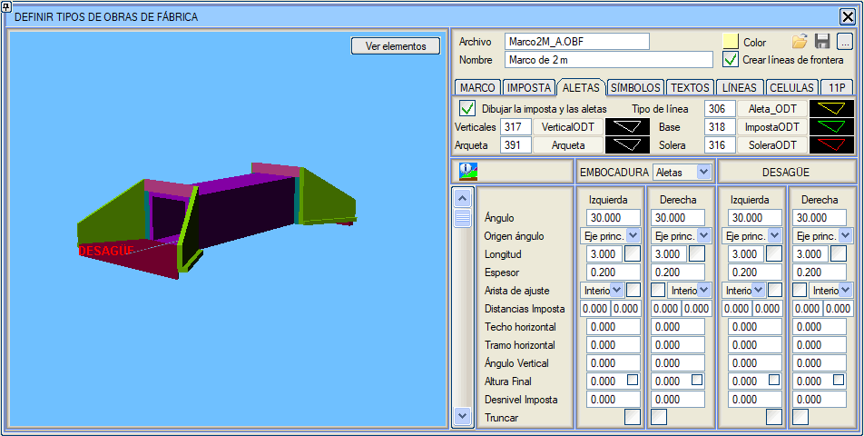
Kanat duvarlarının tanımı, parapet tanımına çok benzer: önce parapet ve kanat duvarlarının kretinin, parapet tabanının, radyenin ve düşey çizgilerin çizgi tiplerini tanımlarız; sonra geometriyi tanımlamaya başlarız. Hem giriş ağzı hem de çıkış ağzı iki türü destekler: Kanat Duvarları veya baca / rögar. Baca şu parametrelerle tanımlanır: Uzunluk, genişlik, duvar kalınlığı, radye ve kum tutucu (bacanın su seviyesinden iç derinliği). Baca tabanının kotu (radye üzerinde), menfezin giriş ağzı için tanımlanan kottur. Baca kretinin kotu, kesitin bu noktanın düşeyindeki kotudur (örneğin, giriş ağzını hendek tabanının altında işaretlersek, baca kretinin kotu hendek tabanının kotuyla aynı olacaktır). Eğer baca, Menfez giriş ağzının referans ekseninin kesiti dışındaysa, baca kapağının kotlarını belirlemek için arazi yüzeyi kullanılır. Her durumda, bacanın yüksekliği tanımlanabilir ve sıfırdan büyük bir değer verilirse, bu değer kullanılır ve kesit veya arazi ile kesişimler aranmaz. Her kanat duvarı da açı, uzunluk ve kalınlık ile tanımlanır. Kanat duvarının üst kotu, parapet kenarları tarafından belirlenir. Alt kot, kanat duvarının iki ucunun dolgu düzleminden aynı miktarda çıkacak şekilde belirlenir. Kanat duvarlarına ayrıca, aşağıdaki gibi bir dizi ek geometrik özellik tanımlanabilir:
V-Kesim ve Kapak: Baca Tipi Giriş Ağızları için, üst ağız, platformun (orta refüj, hendek veya hendek kaplaması) merkez, dış ve iç uçlarındaki kotları alarak V şeklinde kesilebilir. Baca, modeli kırpan, yüzeye kadar bir boşluk açan kapalı bir sınır çizgisi oluşturur. Araziden açılan boşluk, menfez için kazı metrajına dahil edilir. Bacalar bir ızgara ile kapatılır. Kurulumla birlikte gelen Estructura_Doble.isa örneğinde gözlemlenebilir: Menfez_7 (Eksen 2) ve Menfez_2 (Eksen 1). Baca merkezi iki Mesafe değeri ile kaydırılabilir: birincisi, giriş ağzının tanım noktasına dik olarak ölçülen bir mesafedir ve ikincisi, paralel olarak ölçülen bir mesafedir, her ikisi de menfez gövdesinin açık yüzüne göre referans alınır. . 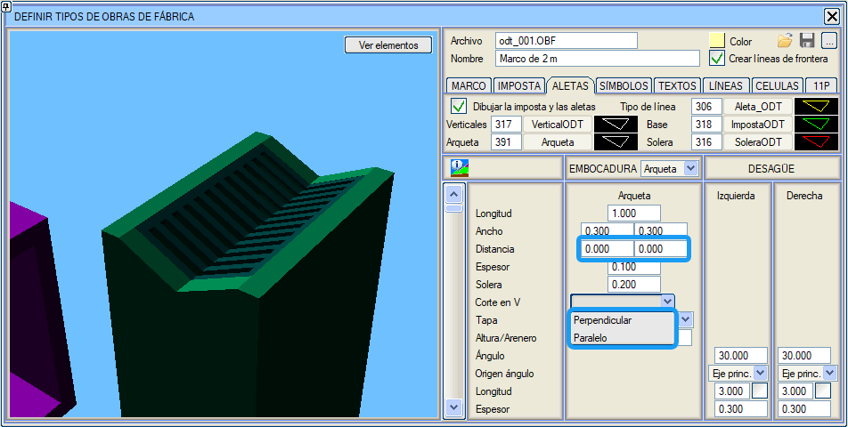
Kapak, V-Kesim, Düz Kapak, V ile düz ızgara gibi çeşitli modlarda yapılandırılabilir. Eğer V bitişliyse, yüksekliğini eklemeye izin verilir. 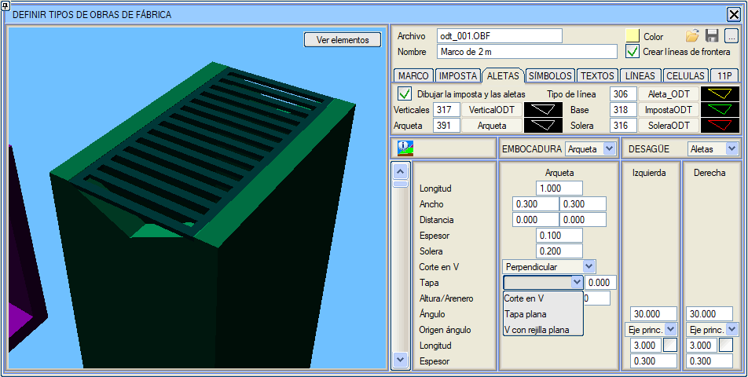
Ayrıca kanat duvarının radye üzerindeki nihai yüksekliği de tanımlanabilir. (Toplam yükseklik bu yükseklik + pabuç derinliği olacaktır). Unutmamalıyız:
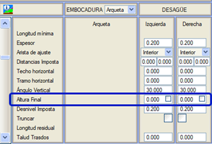
Birbirine bağlı Menfezlerde, Menfezin giriş ağzında, bir önceki Menfez ile birleştirmek için yarıçap vererek bir dirsek tanımlanabilir. Kurulumla birlikte gelen Damo/Estructuras klasöründeki EstructuraDoble.isa örneğinde Menfez 11'de bir örnek görülebilir (Marco2M_a.obf + Marco2M_B.obf, ikincisinde dirsek tanımlanmıştır).  Semboller 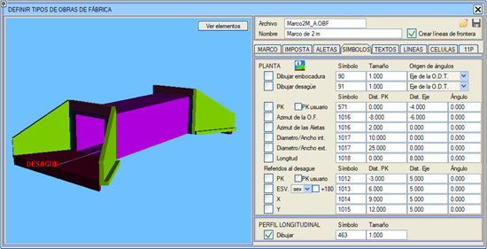
Bu sekmede, menfezin planda ve boykesit paftasında gösterimi için sembolleri tanımlarız. Eğer menfezin yalnızca 2D bir gösterimi isteniyorsa (yani menfez gövdesi, parapet ve kanat duvarlarının gösterimi olmadan), hem giriş ağzı hem de çıkış ağzı için planda sembol oluşturma kutucukları etkinleştirilmelidir. Varsayılan olarak, program sırasıyla S90 ve S91 sembollerini ayarlar ve her durumda boyutları değiştirilebilir ve gösterimleri için açı başlangıcı (menfez ekseni veya ana eksen) belirtilebilir. Menfezin çeşitli noktalarını ve verilerini etiketlemek için semboller eklenebilir: KM, menfez azimutu, kanat duvarı azimutları, iç ve dış çaplar/genişlikler, uzunluk vb. Ayrıca çıkış ağzına ilişkin etiketler de ekleyebiliriz: eksenle kesişim KM'si, verev açısı vb. Kütüphanede örnek olarak bu seçenekleri kullanan M_PruebaA.OBF dosyası bulunmaktadır. Boykesitteki gösterime gelince, bu varsayılan olarak etkindir ve program S463, S464 sembollerini önerir. Seçilen sembolün boyutu da özelleştirilebilir. Hem KM hem de Çıkış Ağzına Göre KM için, KM Eşitliklerinden elde edilen KM, Kullanıcı KM kutucuğu etkinleştirilerek etiketlenebilir. Metinler Her menfez için, planda ismi ve yapı numarasını göstermek üzere çeşitli etiketler tanımlayabiliriz. Her durumda bir etiket stili, boyutu, yatay ve düşey bağlantı noktası, mesafe ve açı belirtilebilir. 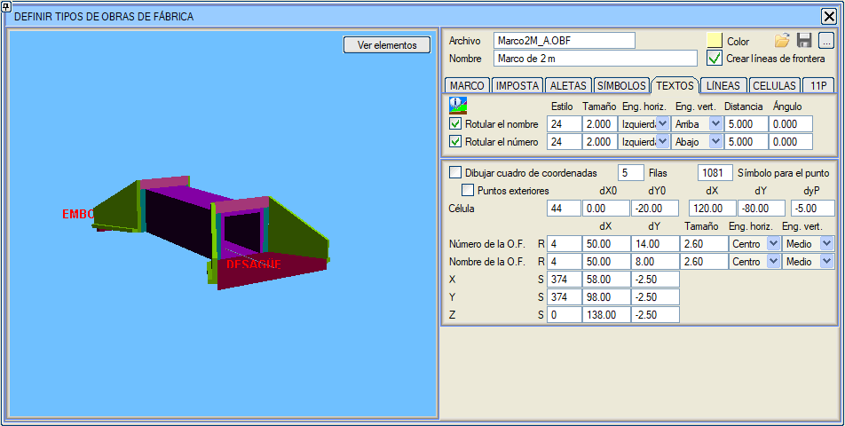
Ayrıca bir koordinat tablosu da çizebiliriz. Bu tablo on bir noktaya kadar içerir: her kanat duvarı için iki, giriş ağzı, çıkış ağzı ve ana eksenle kesişim noktası için bir tane daha. Koordinat tablosu çiz kutucuğu etkinleştirilmeli ve ilgili parametreler yapılandırılmalıdır. Varsayılan olarak, kanat duvarlarının iç noktalarını etiketler, Dış noktalar kutucuğunu işaretleyerek kanat duvarlarının dış noktalarını etiketleyebiliriz.. 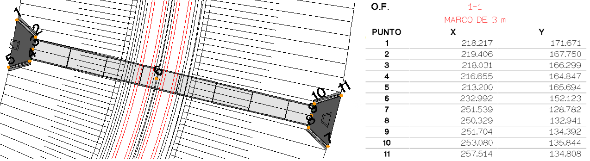
Eğer sütun başına bir tablo çizilmesi istenirse (1 satır), tablonun konumu Menfez numarasına bağlıdır ve aktif olmayan veya bu çizim moduna sahip olmayan yapılar tarafından bırakılan boşluklar doldurulmaz. Bu, Profil-Plan-Tablo-Şema gibi birleşik paftaların otomatik alt paftalanmasına olanak tanır. Bu tür paftalar hakkında daha fazla bilgi için Boykesit -> ENKESİT PAFTALARI -> Menfezler'e gidin. Çizgiler Plandaki gösterim için kullanılacak çizgileri belirtmeyi sağlar. Belirli bir tipte, menfez eksenine paralel ve giriş ile çıkış ağzından belirli bir mesafede iki çizgi (genellikle her iki tarafta birer tane) çizebiliriz. 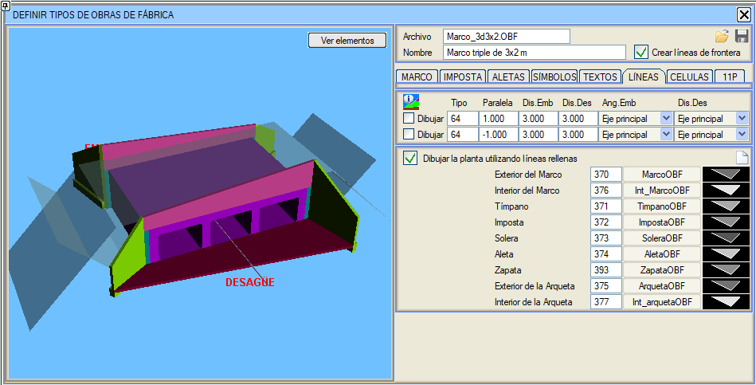
Menfezin basit bir gösterimi yapılıyorsa (menfez gövdesi, kanat duvarları ve parapet çizilmeden), bu çizgiler menfezin genişliğini taklit edecektir. Eğer menfez gövdesi çizilecekse, genellikle bu çizgiler etkinleştirilmez. Programın kütüphanesinde, kullanıcı basit menfez gösterimlerine (2D) sahip C1.obf, C2.obf, C3.obf, C4.obf, C5.obf, C7.obf, C9.obf ve C10.obf dosyalarını bulabilir. 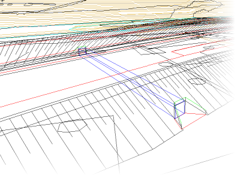
Ayrıca, menfezi dolgu çizgileri kullanarak tarama yöntemiyle çizme imkanı da bulunmaktadır. Bunun için Planı dolgu çizgileri kullanarak çiz kutucuğu etkinleştirilir ve her bir eleman (Menfez Gövdesinin Dışı, Menfez Gövdesinin İçi, Alın Duvarı, .. .. ) için çizgi tipleri tanımlanır. Aşağıdaki resimde bir örnek gösterilmektedir. 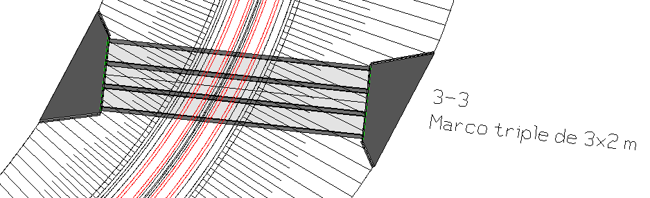
Hücreler Burada, Menfezin verilerini içeren bir tablo çizme imkanı eklenmiştir: İsim, Eje, KM, Eğim ve Giriş Ağzı(Memba) ile Çıkış Ağzı(Mansap) koordinatları, Kanat Duvarlarının uzunluğu ve giriş ile çıkış ağzının eksene olan mesafeleri. 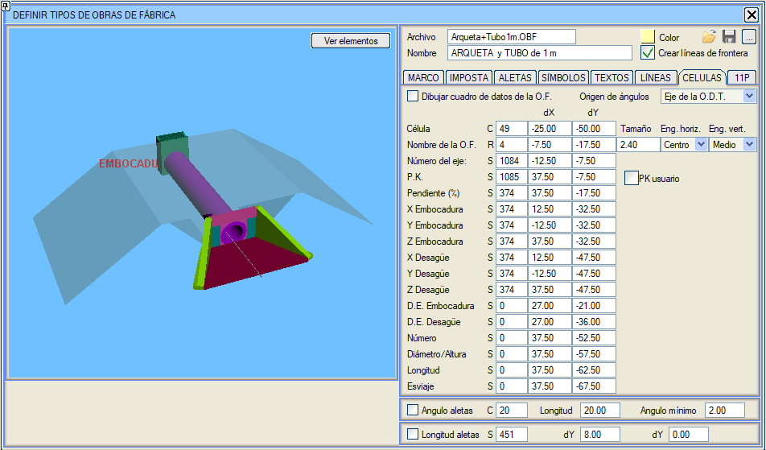
Kurulumla birlikte gelen DEMO\Estructuras klasöründeki Estructura_doble.isa örneğinde, 10 numaralı Menfez için bu etiketleme modu kullanılmıştır. 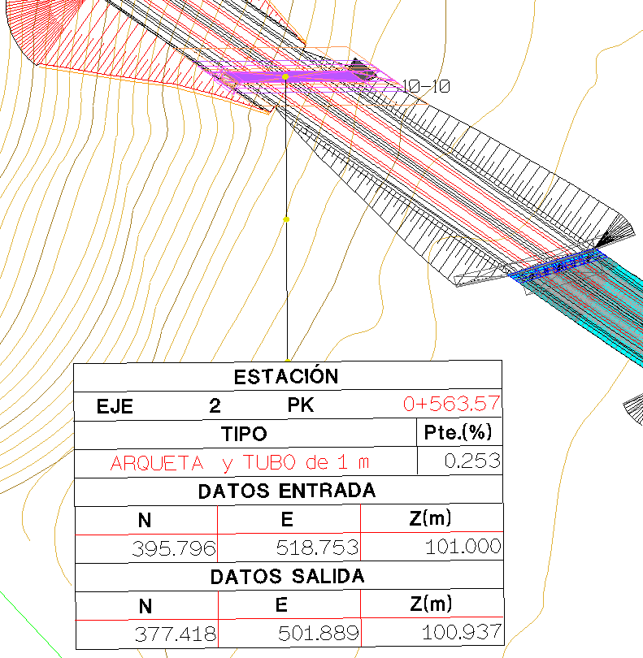
KM için, KM Eşitliklerinden elde edilen KM, Kullanıcı KM kutucuğu etkinleştirilerek kullanılabilir. 11N  Bu sekmede, Menfezin 11 karakteristik noktasının koordinatlarının, her biri için bir hücre kullanılarak etiketlenmesi tanımlanabilir. Bu hücrelerde X(D), Y(K), Z koordinatları etiketlenebilir. 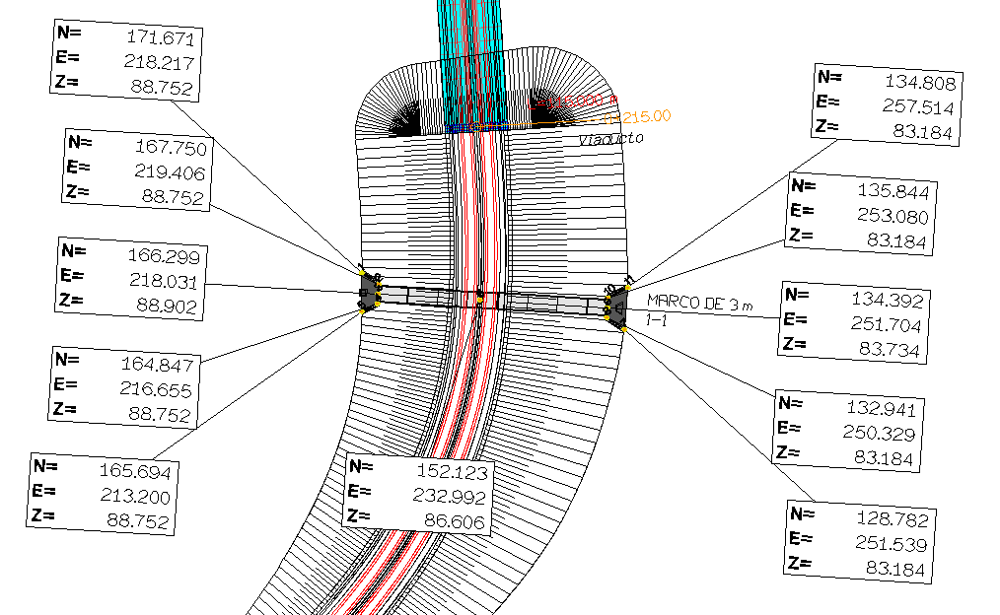
|
 Mevcut menfezi proje bağlamında (dolgu/yarma, platform vb. de göstererek) 3D olarak görüntüle.
Mevcut menfezi proje bağlamında (dolgu/yarma, platform vb. de göstererek) 3D olarak görüntüle.